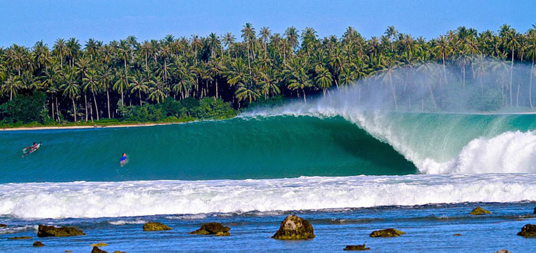
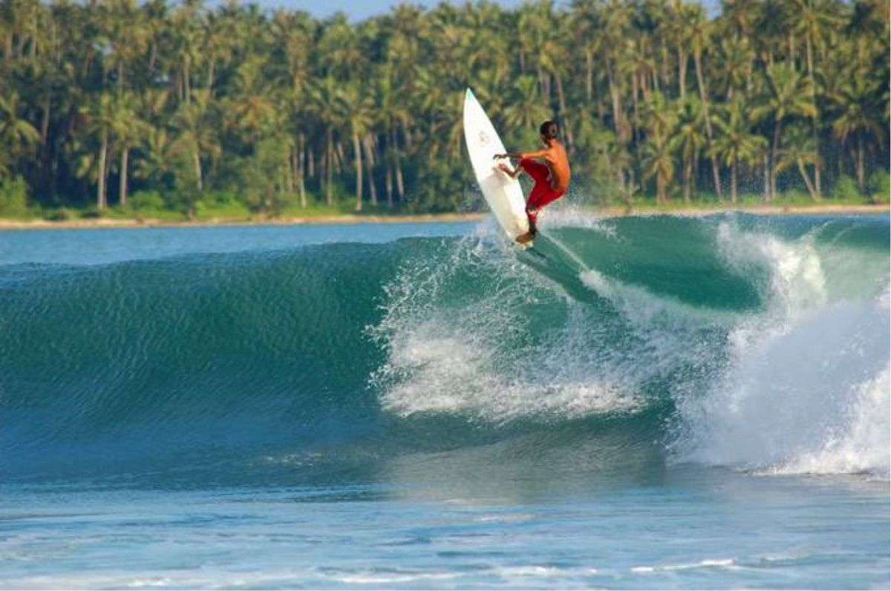
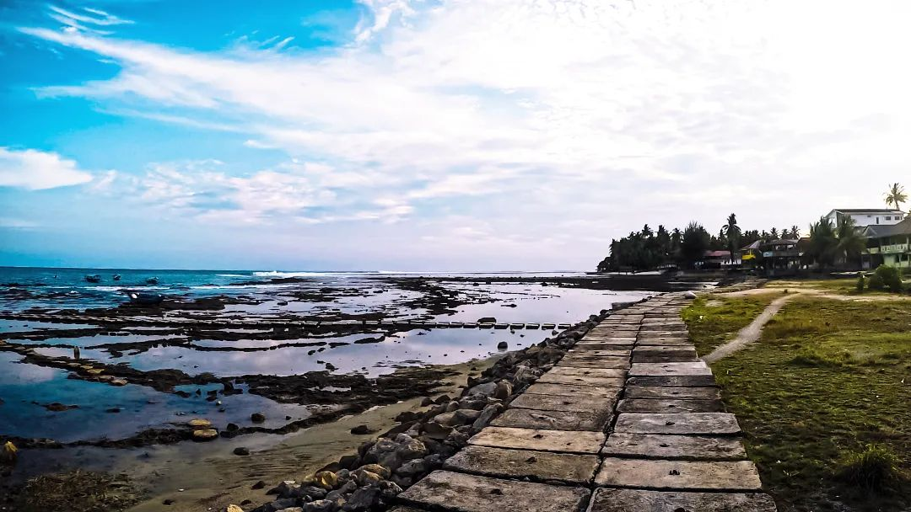
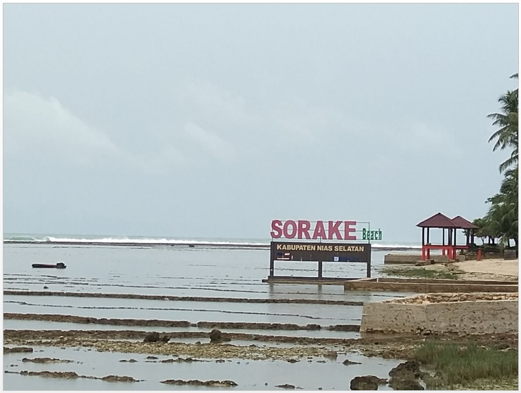

Pantai Sorake
Pesona Biru Samudra, Kehangatan Budaya Nias
Pesona Biru Samudra, Kehangatan Budaya Nias
Pantai Sorake yang terletak di Kecamatan Teluk Dalam, Nias Selatan, merupakan destinasi selancar kelas dunia yang diakui sebagai salah satu spot surfing terbaik kedua di dunia setelah Hawaii. Pantai ini sangat terkenal di kalangan peselancar internasional karena memiliki karakteristik ombak yang sangat konsisten dengan ketinggian ekstrem berkisar antara 10 hingga 15 meter. Keunikan utama dari ombak di sini adalah gulungannya yang utuh dan bisa berputar hingga 11 kali sebelum akhirnya pecah di tepi pantai. Waktu terbaik untuk berkunjung dan menyaksikan aksi para peselancar profesional menaklukkan gelombang ini adalah pada puncak musim selancar yang berlangsung antara bulan April dan September.
Karena reputasi ombaknya yang luar biasa, kawasan yang berdampingan langsung dengan Pantai Lagundri ini rutin ditunjuk sebagai tuan rumah berbagai kompetisi selancar bergengsi internasional, seperti Nias Open. Selain menawarkan panorama laut yang memukau bagi pencinta olahraga ekstrem, Pantai Sorake juga ramah bagi para wisatawan umum yang ingin bersantai. Di sepanjang bibir pantai, sudah tersedia fasilitas penunjang yang memadai, termasuk deretan homestay dengan tarif terjangkau milik warga lokal yang menyuguhkan pemandangan langsung ke laut lepas. Akses menuju lokasi pun terbilang mudah karena jaraknya yang sangat dekat dari pusat kota Teluk Dalam.
Keunggulan utama pantai ini terletak pada reputasi internasionalnya yang sering menjadi tuan rumah kejuaraan selancar bergengsi seperti Nias Pro, sehingga menarik minat ribuan peselancar mancanegara setiap tahunnya.
Selain menjadi motor penggerak ekonomi daerah, Pantai Sorake juga memiliki nilai tambah karena lokasinya yang dekat dengan situs budaya tradisi Lompat Batu Fahombo.
Di luar reputasinya sebagai surga peselancar, pantai ini menyuguhkan panorama alam tropis yang sangat eksotis dengan air laut biru jernih dan hamparan karang yang indah. Suasana di sekitar kawasan pantai ini relatif tenang dan alami, memberikan pengalaman berlibur yang santai bagi wisatawan non-peselancar yang ingin menikmati matahari terbit atau sekadar bersantai di pinggir laut. Fasilitas pendukung di sekitar lokasi juga sudah memadai, mulai dari penginapan bergaya tradisional (homestay) langsung di tepi pantai hingga persewaan papan selancar dan instruktur lokal yang ramah.
Temukan rute menuju Pantai Sorake dan informasi lengkap kunjungan Anda.
Kawasan Wisata Pantai Sorake, Desa Botohilitano, Kecamatan Teluk Dalam, Kabupaten Nias Selatan, Sumatera Utara, 22861.
☀️ Waktu Operasional : Terbuka 24 Jam (Terbaik Pagi/Sore)
🚗 Akses Jalan : ± 2-3 Jam berkendara dari Bandara Binaka Gunungsitoli.
Dokumentasi pesona keindahan di sekitar Pantai Sorake.



